Tiago Ventura (Georgetown University)
With Christopher Barrie, Margaret E. Roberts, Christopher Schwarz, and Joshua A. Tucker
Social media is often blamed for facilitating the spread of misinformation. As a consequence, governments are increasingly trying to control what circulates online.
… And platforms often fight back such efforts:
Europe: Platforms launched legal challenges against EU fines under the Digital Services Act
Brazil: As Congress prepared to vote on a misinformation bill, Google put a link on its homepage urging users to lobby their representatives against it
United States: Facing a shutdown, TikTok sent push notifications asking users to act against the proposal
These conflicts are rarely confined to governments and platforms.
Norms around content moderation tap into partisan values (freedom of speech vs information control) ~ these conflicts often become partisan
Once they become partisan, enforcing content moderation becomes one more issue citizens divide over.
After Bolsonaro’s 2022 defeat, right-leaning supporters contested the results with truck lockouts, encampments, a strong digital campaign on social media, and a riot in the Congress on January 8
Supreme Court orders X to remove accounts under investigation for election misinformation and for mobilizing the January 8, 2023 attacks
X refuses, closes its Brazilian office, withdraws its legal representative
August 30, 2024: nationwide ban on X disrupting the online routines of ~40 million people
October 8, 2024: ban lifted after X complies
Work on democracies focuses on policy preferences about content moderation: partisan alignment shapes support for content moderation (Appel et al. 2023; Kozyreva et al. 2023)
Work on behavior (circumvention, backlash, exit, VPN usage) comes almost entirely from autocracies (King et al. 2014; Roberts 2018; Hobbs and Roberts 2018; Pan and Siegel 2020; Boxell and Steinert-Threlkeld 2022)
Fewer studies on behavioral effects of conflicts over content moderation + changes in information space.
How do partisan dynamics shape compliance with state-imposed platform bans (an extensive for me information control policies)
and what are the consequences for the information environment in a polarized democracy?
Right-leaning users circumvented the ban.
Left-leaning users almost entirely went silent.
The information environment shifted sharply right in the short run and didn’t fully snap back after the ban.
These changes also affected overall engagement in the platform (not only posting rates) and who returns to the platform after the ban
A ban forces a choice: exit or circumvent
Exit = compliance
Circumvention (VPN) = non-compliance
Users weigh the costs of staying (technical friction, legal risk, vpn costs) against the benefits: information and voice (coordination, agenda-setting, influence).
Reputational incentives: Complying signals respect for institutions; circumventing signals defiance or loyalty, depending on what one’s audience rewards
Informational incentives: If co-partisans leave, the remaining content becomes less congenial and less useful, lowering the payoff to staying
A credible alternative (a recent trend in fragmentation of the social media space) makes coordinated exit easier to sustain
Right-leaning users had reasons to circumvent: defiance, keeping their voice and their audience
Left-leaning users had reasons to comply: normative alignment with the Court, fear of looking like the other camp, Bluesky as an alternative
In autocracies, backlash unites citizens against the state. In polarized democracies, it segments along partisan lines.
Sorting: co-partisans make similar exit/stay decisions, balkanizing the platform along partisan lines
Ratchet: habits form during the ban, so the effect does not fully reverse once the platform is unblocked
Takedown orders, fines, threats of suspension, deplatforming (Mitts 2025) can all turn a platform into a political object
When a platform complies, staying on it signals support for the policy , and information one side considers harmful becomes scarcer
Expectation: milder actions produce the same sorting, slower and smaller but cumulative
14M Decahose tweets to estimate ideology; 7,471 users tracked across seven months
Source: X Decahose API, a 10% real-time sample of all public tweets
Source: full timelines scraped via public Nitter instances (we lost Decahose access mid-project)
\[ \underbrace{\begin{array}{c|cccccc} & \text{folha} & \text{globo} & \text{jovempan} & \text{oeste} & \cdots \\ \hline \text{user}_1 & 12 & 8 & 0 & 0 & \cdots \\ \text{user}_2 & 0 & 1 & 15 & 9 & \cdots \\ \text{user}_3 & 7 & 11 & 2 & 0 & \cdots \\ \vdots & \vdots & \vdots & \vdots & \vdots & \ddots \end{array}}_{\textbf{9,061 users}\;\times\;\textbf{242 domains}} \]
Each cell = number of times user \(i\) shared a link from domain \(j\). The first CA dimension orders users and domains from left to right; user\(_1\) looks left-leaning, user\(_2\) right-leaning.
Filtering
Estimation
Do behavioral ideology scores recover what we think they recover?
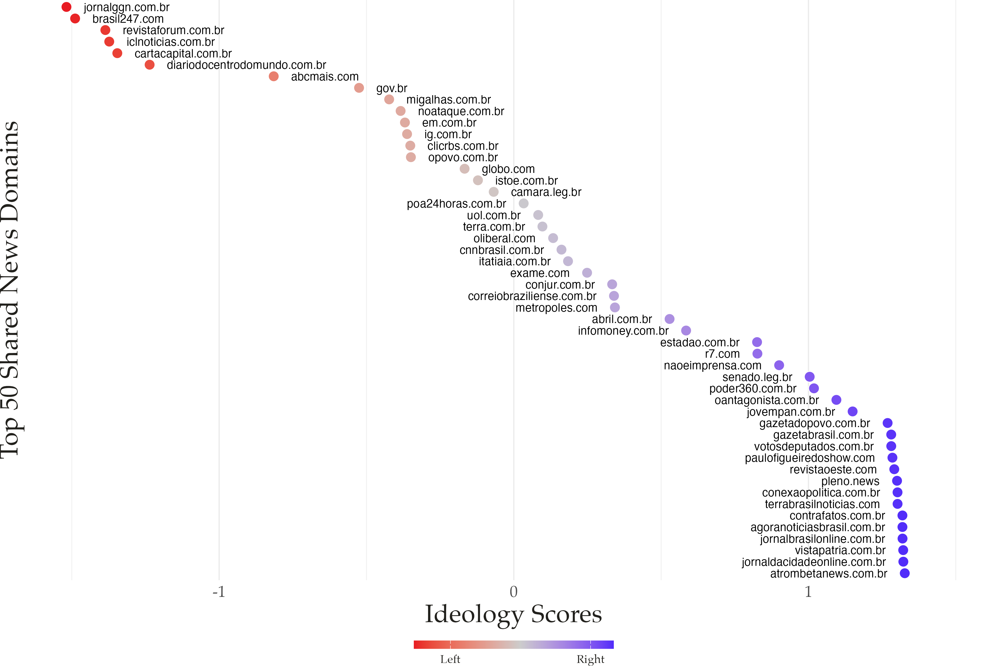
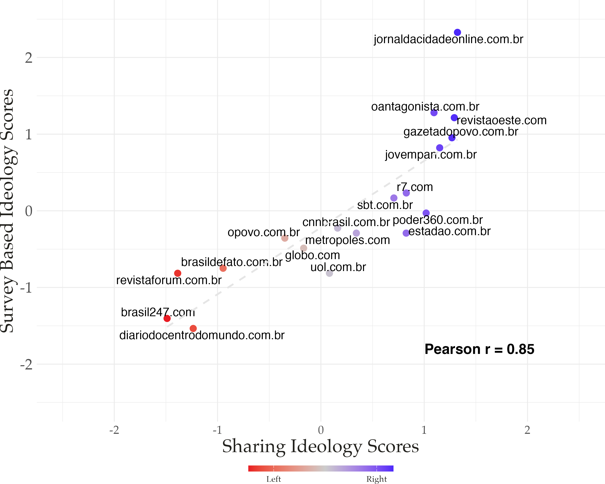
Survey-based ideology from Mont’Alverne et al. (2024), matched on 24 organizations
What happened to posting and news sharing?
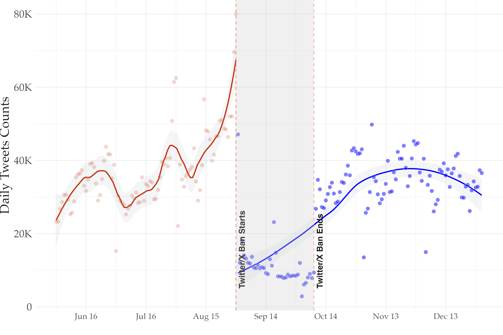
Daily totals across users: 37,207 tweets before the ban, 11,305 during.
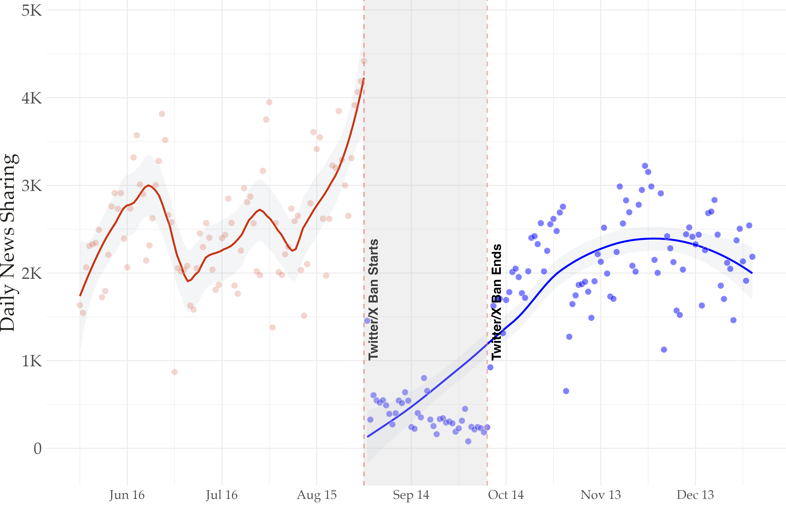
2,587 political news shares per day before the ban, 395 during. No overall Streisand effect: usage returns to baseline rather than rising as a backlash.
Who stayed, who left, and who came back?
\[y_{ij} \sim \text{Poisson}(\lambda_{ij})\]
\[\lambda_{ij} = \exp\left(\alpha_i + \tau_j + \sum_{t=1}^{6} \beta_t \cdot \text{Right-leaning}_i \cdot \text{Month}_t\right)\]
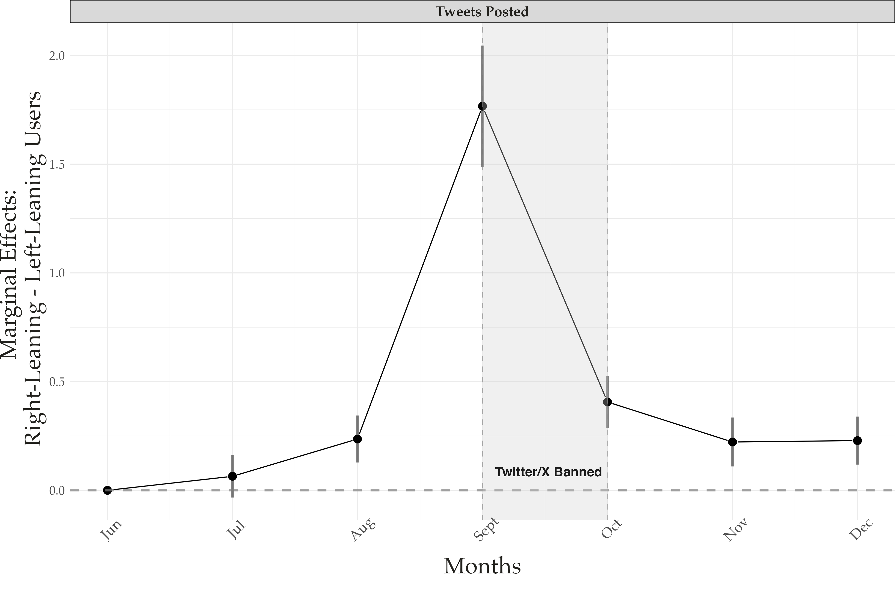
September: β = 1.76, exp(β) = 5.8, z = 12.6. Effects persist at smaller magnitude after the ban.
| Month | β | Rate ratio |
|---|---|---|
| July | 0.07 | 1.07 |
| August | 0.24* | 1.27 |
| Sept. (ban) | 1.77*** | 5.8 |
July n.s.; *** p < 0.01
Activity starts climbing in mid-August, as the conflict escalates. X announces the closure of its Brazilian office on August 17
No block is in place yet, but the platform is already seeing a sorting process
The gap increases once the ban is enforced, and continues, never returning to the June baseline
Not an inferential problem, but actually a substantive finding: the treatment is the politicization of enforcement, and the ban is its most extreme form
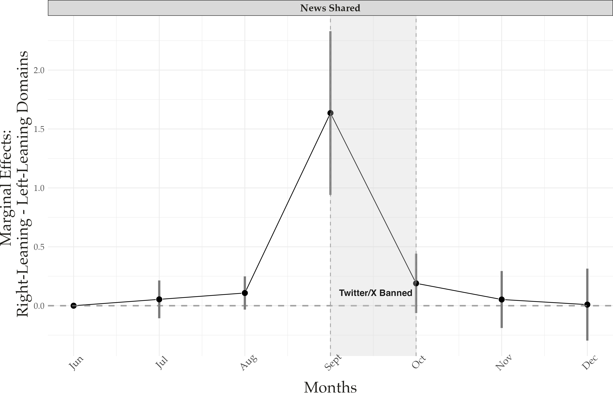
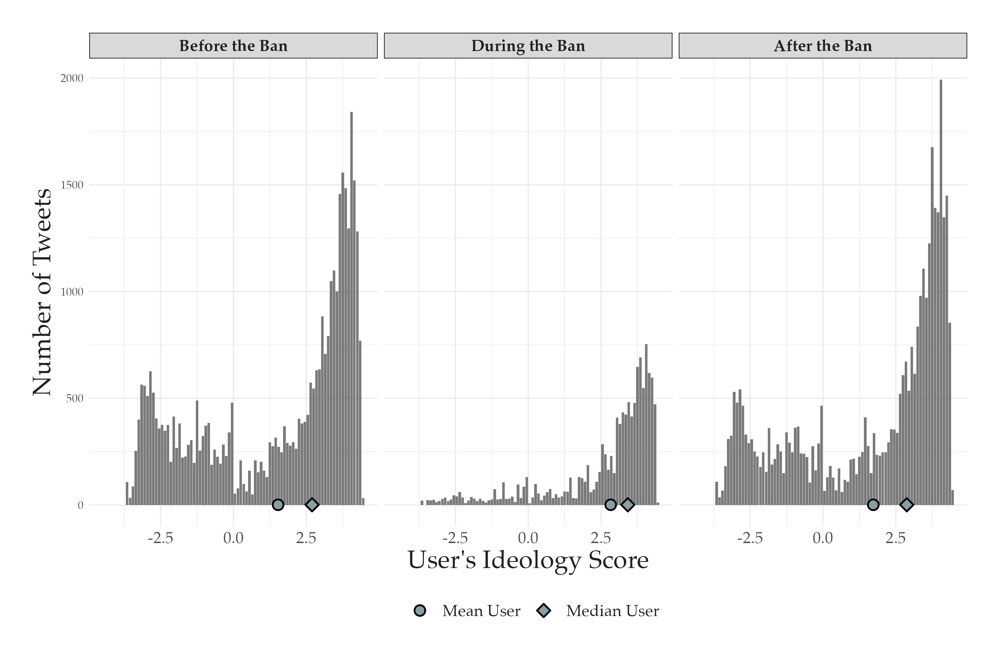
Centrist and left-leaning users largely went silent during the ban.
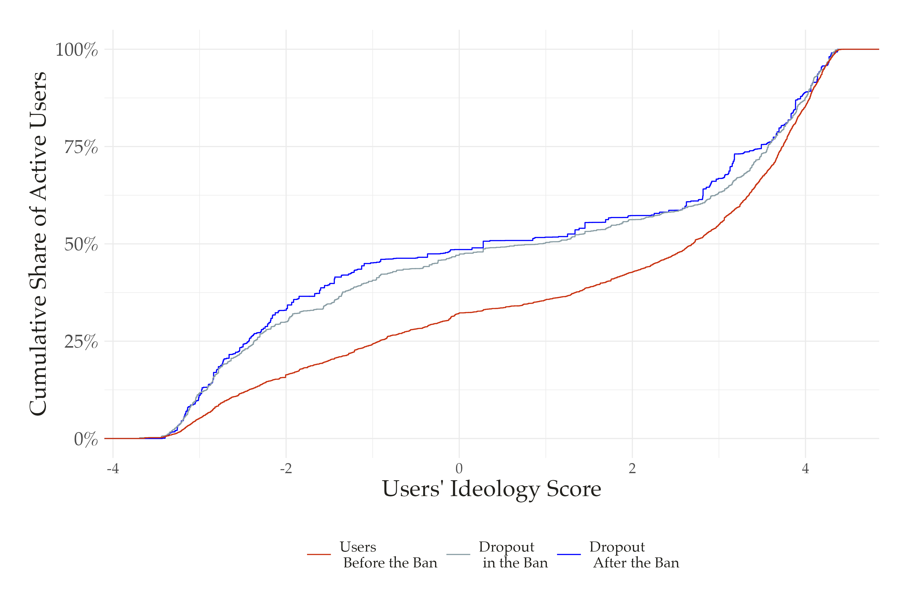
7,291 users active pre-ban; 2,346 fully complied during the ban; 656 never returned. Right-leaning users are ~70% of the pre-ban sample but ~50% of dropouts.
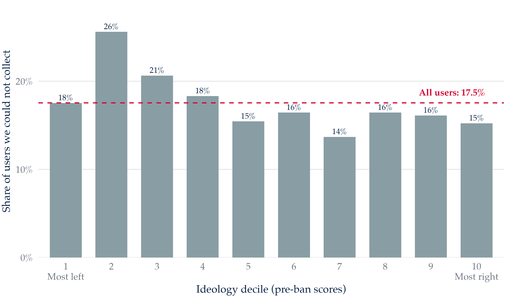
Timelines collected for 7,471 of the 9,061 users identified pre-ban; the rest were deleted, renamed, suspended, or private. Uncollected users post and share news at the same rates as collected ones.
What happened to the information environment?
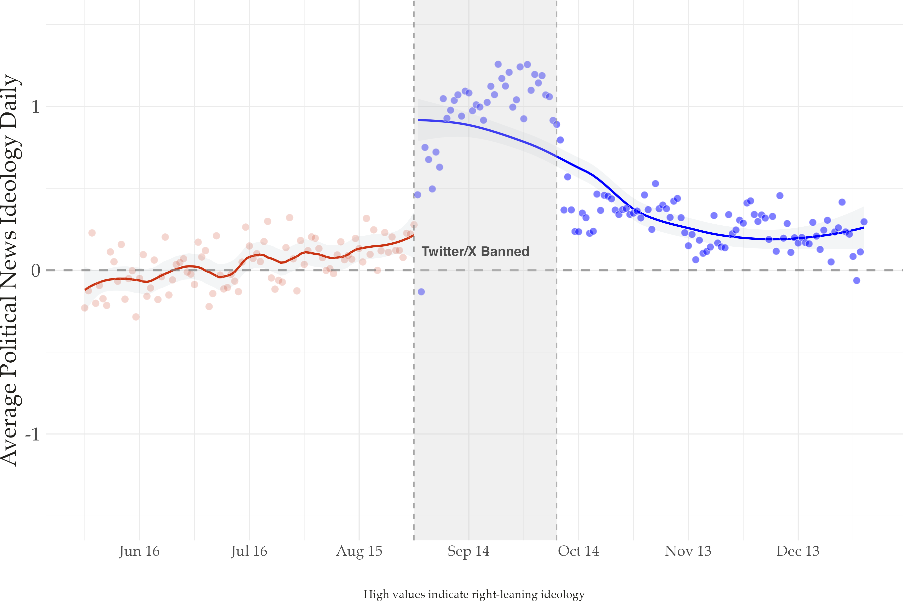
Median domain ideology: 0.27 before, 1.26 during, 0.30 after (0.04 SD to the right of baseline)
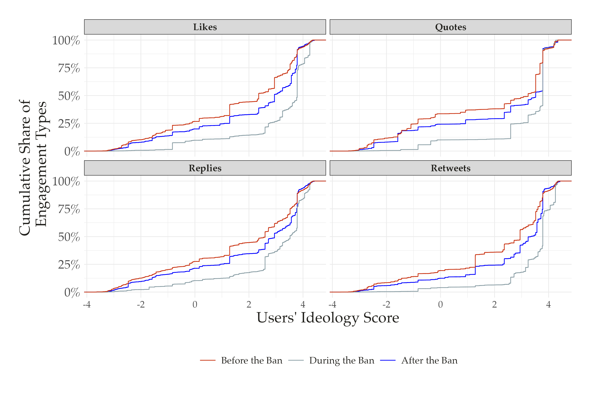
Right-leaning users received 73% of likes pre-ban, 90% during, and 80% after. Similar patterns for retweets, quotes, and replies.
Is it partisanship, or just easier access to VPNs?
Circumventing the ban required a VPN
VPN access may track income
Income is associated with right-wing preferences in Brazil (Layton et al. 2021; Zanotti et al. 2023; Rennó et al. 2026)
If so, right-leaning users stayed because they could, not because they wanted to
Fielded April 2026, n = 1,694 (2 years after the ban)
Asks whether respondents use a VPN now, used one in the past, never used one, or don’t know what a VPN is
Three outcomes: uses now, ever used, used in the past but not now
Logit models with ideology, income, education, digital literacy, age, gender, race, platform use, and region fixed effects
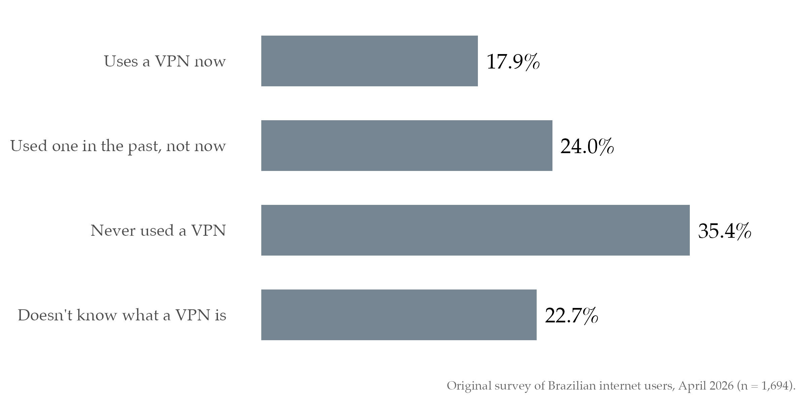
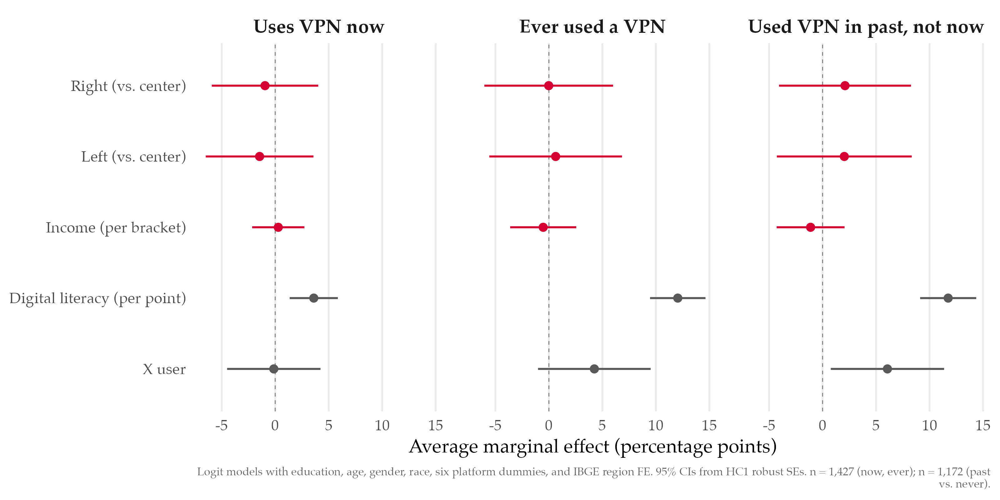
X users are 6.1 percentage points more likely to report using a VPN in the past but not now (95% CI: 0.8 to 11.4; n = 1,172)
Suggestive, but consistent with temporary circumvention during the ban
No partisan baseline in VPN access: the partisan gap on X reflects partisan motivation, not baseline differences
Asymmetric compliance + selective dropout = lasting partisan segmentation
Enforcement is politicized: the right opposed the Court’s decision; the left supported it
Compliance diverges: conservatives circumvent; progressives comply or exit to alternatives
The platform tilts right: content, news, and engagement all shift toward conservative users
The ratchet locks in: after the ban lifts, left-leaning users don’t fully return and the rightward shift persists
Conflicts over content moderation in polarized democracies can produce durable partisan shifts in participation
These changes are sticky. Three months after the ban, X was still more conservative, and 9% of users never came back
Echo chambers at the platform level: fragmentation is no longer only a region of the user graph, it is the full platform.
Policy trade-off: measures meant to curb misinformation can reallocate control of the information environment
Working now on dynamic measures of polarization before and after the ban based on the tweets
Understand more about the sample of politically engaged users: how much of the overall content we collect they really represent?
Ventura · The X Ban in Brazil · CIND, University of Pennsylvania 2026